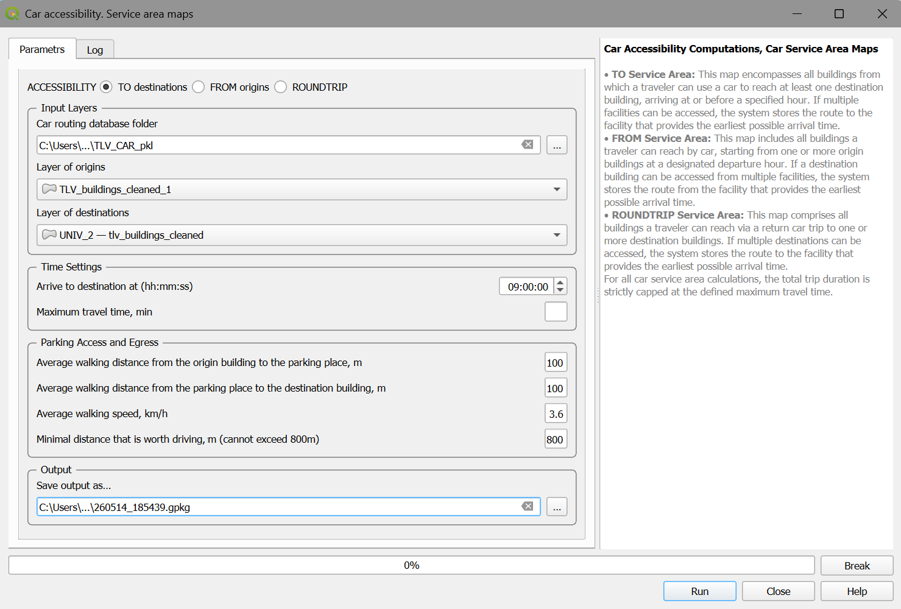
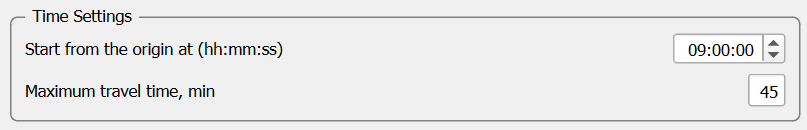
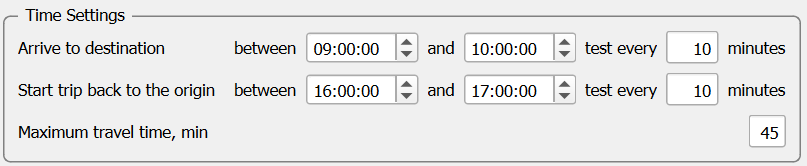

6. Car accessibility computations
This section details the Car accessibility branch of the Accessibility Calculator menu (Figure 1).
Figure 1. The Car accessibility menu
A car trip is inherently simpler than a transit trip and consists of only three legs: walking from the origin to the parked car, driving to the destination, and walking from the final parking spot to the destination building. In the current version of the plugin, we do not account for dynamic, congestion-dependent routing; therefore, only fixed start/arrival time accessibility is considered for car journeys.
6.1. Car service area maps – parameters and computation execution
This section outlines the details for computing TO accessibility with cars(Figure 2). To perform these computations, you need the following:
The Car routing database (see Prepare Databases → Car routing database).
The topologically clean layer of buildings, loaded in the current QGIS project.
The visualization layer (Voronoi polygons or hexagons).
Note
Car accessibility calculations require valid Origin and Destination layers. These must be selections originating from either a topologically cleaned buildings layer or a hexagonal grid constructed by the AC plugin. Although the plugin includes built-in verification checks, input validity cannot be validated exhaustively; ensure selection integrity before execution.
Navigate to Car accessibility → Service area maps.

Figure 2. The Car accessibility → Service area maps dialog with the TO option selected.
Just as in the case of the transit accessibility, the dialog box is divided into several logical blocks: Input block
Car routing database folder: The directory containing the car routing database generated during the “Prepare Databases” stage. You can check that it includes
graph.json,dict_building_vertex.json,dict_vertex_buildings.json.Layer of origins: Origins are buildings where the trip to destinations can start. It may be the entire layer of buildings or a selection set, prepared by the user in advance.
Layer of destinations: Destinations are buildings where the trip from origins can end. It may be the entire layer of buildings or a selection set, prepared by the user in advance.
Time settings block
Arrival to destination at (hh:mm:ss): The absolute latest time the traveler must arrive at the destination facility.
Maximum travel time, min: The absolute maximum duration allowed for the entire door-to-door trip (walk + drive + walk).
Parking access and egress, Minimal driving distance
Average walking distance from the origin building to the parking place, m: The assumed average network walking distance to the parked car. The default is 100 m.
Average walking distance from the parking place to the destination building, m: The assumed average network walking distance to the destination building. The default is 100 m.
Average walking speed (km/h): The assumed average pedestrian walking speed.
Minimal distance that is worth driving, m (cannot exceed 800m): If the network distance between the origin and destination is lower than this distance, the trip will be performed by foot.
Output block
Save output as…: Set the name of the .gpkg file of the results of the computations. Additional copy of the log file will be saved in a .CSV format. The default output file name is the concatenation of the date and time of the computations start, [YYYYMMDD] + “_” + [HHMMSS] is shown in the dialog box and, typically, is changed by the user.
Click Run to initiate the calculation. The Progress bar tracks the status of the computations. You can interrupt the process at any time by clicking Break. The Log tab records metadata regarding the computations (detailed in the next section). The computation results consist of several tables. See section 6.1.1 for detailed description of the output structure.
6.2. Car service area - report file
The primary results sheet contains the details of the fastest trip to each accessible building (Figure 3). The corresponding thematic map visualizes the total travel time to the closest facility from each of the buildings from which the set of facilities can be reached. The additional table contains the fastest trips from each accessible building to each destination.
| Attribute | Meaning |
|---|---|
| Origin_aid | The unique aid of the facility building. |
| Destination_aid | The unique aid of the destination building. |
| Duration | The total door-to-door travel time. |
Figure 3. The layout of the Car accessibility → Car service area maps, TO locations, fixed-time.
For a practical example of these computations, see here.
6.3. Car accessibility FROM facilities
To compute accessibility originating from specific facilities, select the FROM option in the ACCESSIBILITY row of the dialog (Figure 4).
Figure 4. The FROM accessibility selection.
For FROM-accessibility, the travel time is estimated based on the car trip that results in the earliest possible arrival at the destination. Most parameters remain identical to the TO-accessibility setup, while, the arrival time parameter is replaced by a start time (Figure 5).

Figure 5. The Arrival/Departure time configuration for fixed-time FROM-accessibility.
The result file for FROM-accessibility shares the same structure as the TO-accessibility outputs, with minor header adjustments to reflect the reversed trip direction (from the facilities outward to all buildings). The Log and Result files for FROM-accessibility maintain the same format as those for TO-accessibility. For an example of FROM Car accessibility, see here.
6.4. ROUNDTRIP Accessibility
To compute roundtrip accessibility, select ROUNDTRIP in the ACCESSIBILITY row of the dialog (Figure 6).
Figure 6. The ROUNDTRIP accessibility selection.
As explained in Section 2.8, a roundtrip journey consists of two distinct legs: from the home origin to the facility, and from the facility back to the home origin. While most parameters remain consistent with standard TO/FROM calculations, the user must explicitly define the temporal windows for both the outbound (Home → Destination) and inbound (Destination → Home) trips (Figure 7). The algorithm evaluates the departure and arrival time intervals to find valid roundtrips.

Figure 7. Temporal window configuration for ROUNDTRIP accessibility.
For an example of Car ROUNDTRIP accessibility, see here.
6.5. Cumulative number of opportunities accessible by car
The CNO maps for car trips are generated using the exact same principles and workflows as CNO maps for transit accessibility (see Section 6.3). The output is also organized identically to the transit computations: the default thematic map visualizes the total number of buildings reachable within the Maximum travel time. If additional opportunity attributes (e.g., number of jobs) were selected for assessment, the calculated measures for each attribute are stored in the results file and can be visualized as secondary thematic maps. For examples of Car accessibility → Cumulative opportunities maps for FROM/TO/ROUNDTRIP accessibility, see here.